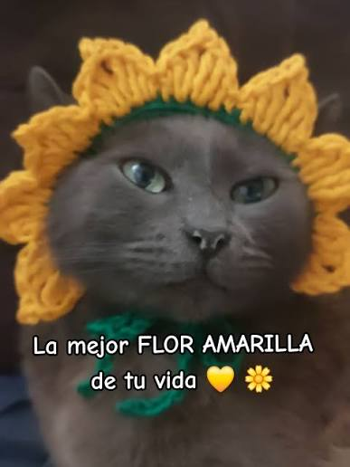
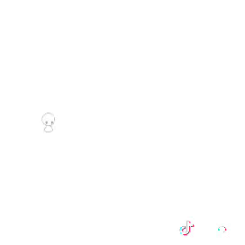

21 de septiembre
Feliz 21 de septiembre
Hoy es un día especial y quería hacerte algo bonito. ¿Seguimos?


Te quiero mucho mi amolf
Estas flores amarillas son para ti, para que sepas lo especial que eres para mí tqm (๑♡⌓♡๑).
Gracias por estar en mi vida mi Amolf

Que este 21 de septiembre sea tan bonito como tú. Feliz día, mi amor, siento mucho no estar al lado tuyo y no poder darte las flores en físico, pero espero que te haya agradado mi detalle. TE QUIERO MUCHO, ya te quiero ver de nuevo en persona y darte muchos besitos y abrazos ( ˘ ³˘)♥.